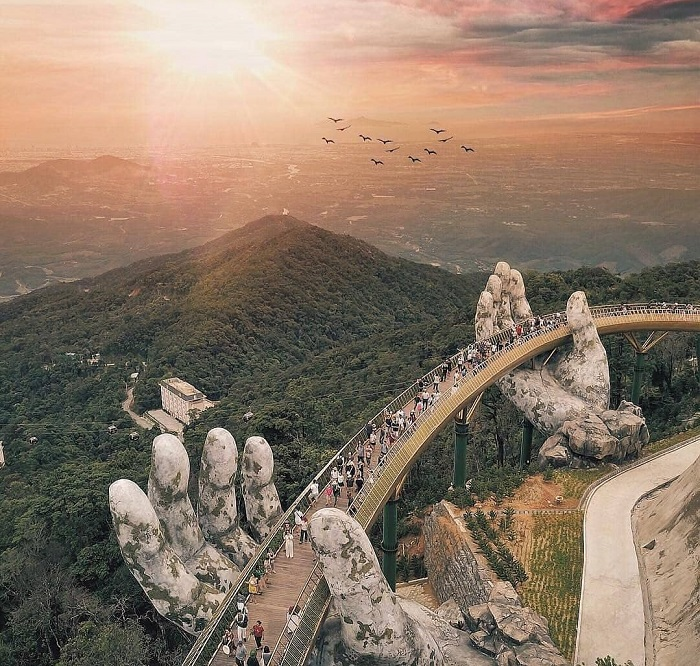

CẦU VÀNG ĐÀ NẴNG - TOP 10 KÌ QUAN THẾ GIỚI NĂM 2022
Cầu Vàng Đà Nẵng là cây cầu đặc biệt, tựa như tấm vải lụa xinh đẹp vắt ngang chừng núi Chúa, thu hút đông đảo du khách trong nước và thế giới đến khám phá trong nhiều năm qua.
Vị trí Cầu Vàng -Đà Nẵng
Địa chỉ: nằm ở khu vực thuộc làng An Sơn, xã Hòa Ninh, huyện Hòa Vàng, thành phố Đà Nẵng
ĐÔI NÉT VỀ CẦU VÀNG ĐÀ NẴNG - VẺ ĐẸP VƯƠN TẦM THẾ GIỚI.
Đến Đà Nẵng, bạn tuyệt đối không nên bỏ lỡ việc khám phá địa điểm check-in nổi tiếng Cầu Vàng Đà Nẵng. Cầu Vàng nằm trong quần thể khu du lịch Bà Nà Hills Đà Nẵng, có hình dáng như một dải lụa vàng xinh đẹp, nối giữa ga Marseille với vườn hoa Thiên Thai.
Cây Cầu Vàng ở Đà Nẵng có chiều dài 150m với 8 nhịp cầu, 7 trụ, nhịp lớn nhất là 21.2m, nằm ở độ cao 441m so với mực nước biển. Diện tích mặt cầu: bề rộng toàn bộ Cầu Vàng là 5m, đã gồm phần mặt cầu dành cho người đi lại rộng 3m, hai bên cầu là bồn hoa, mỗi bên rộng 1m. Phần vỏ cầu sử dụng thép tấm sơn nhũ vàng, chất liệu inox mạ Titan sáng bóng để xây dựng. Riêng phần khung của đôi bàn tay làm bằng lưới thép, nhìn vào bề ngoài khiến người ta liên tưởng đến những tảng đá rêu phong.
Năm 2022, tờ DailyMail của Anh công bố thông tin Cầu Vàng Đà Nẵng là 1 trong 10 kỳ quan mới của thế giới, xuất sắc đứng ở vị trí dẫn đầu của cuộc bình chọn. Tờ báo này mô tả cây cầu như một bàn tay khổng lồ vô cùng tình cảm nâng đỡ con đường dài dành cho du khách dạo bước trên đó, nhìn ra thành phố biển Đà Nẵng xinh đẹp.
CẦU VÀNG BÀ NÀ HILLS ĐÀ NẴNG - SIÊU PHẨM “VÔ TIỀN KHOÁNG HẬU”
Ngay từ khi mới xuất hiện, địa điểm du lịch Đà Nẵng Cầu Vàng nhanh chóng nhận được sự
hưởng ứng tích cực từ công chúng. Được đánh giá không chỉ là một công trình kiến trúc, mà còn là
một tác phẩm nghệ thuật kết hợp chuẩn mực và hài hòa giữa sức sáng tạo của con người và thiên
nhiên xinh đẹp.
Thông tin, hình ảnh về cây cầu nhanh chóng “phủ khắp” các trang báo và mạng xã hội thế giới và trong nước, thu hút đông đảo du khách đến tham quan. Khi được chiêm ngưỡng, ai cũng đều phải trầm trồ trước hình ảnh đôi bàn tay khổng lồ rêu phong như của mẹ thiên nhiên đang nâng đỡ cây cầu. Đó là một khung cảnh vô cùng hùng vĩ, tráng lệ.

Cầu Vàng trở thành biểu tượng du lịch mới của thế giới. Nhìn vào thống kê được tờ Daily Mail của Anh đăng tải, bạn sẽ thấy được độ nổi tiếng rộng khắp của biểu tượng du lịch Đà Nẵng. Đã có hơn 20.000 bài đăng trên mạng xã hội Instagram gắn hashtag #goldenbridgevietnam ngay khi vừa mở cửa chính thức được thời gian ngắn.
Cầu Vàng là điểm check-in cho ra đời nhiều bức ảnh đẹp “chất ngất” dành cho du khách. Đã có vô vàn những bức ảnh lột tả chân thực vẻ đẹp của Cầu Vàng được chia sẻ rộng rãi khắp mạng xã hội Việt Nam và thế giới.
LƯU Ý ĐI CẦU VÀNG ĐÀ NẴNG CẦN BIẾT
@ Nguồn: Vinpearl.com